<!doctype html>
<html lang="en">
    <head>
        <meta charset="utf-8">
        <meta http-equiv="X-UA-Compatible" content="IE=edge">
        <meta name="viewport" content="initial-scale=1,user-scalable=no,maximum-scale=1,width=device-width">
        <meta name="mobile-web-app-capable" content="yes">
        <meta name="apple-mobile-web-app-capable" content="yes">
        <link rel="stylesheet" href="css/leaflet.css">
        <link rel="stylesheet" href="css/L.Control.Layers.Tree.css">
        <link rel="stylesheet" href="css/L.Control.Locate.min.css">
        <link rel="stylesheet" href="css/qgis2web.css">
        <link rel="stylesheet" href="css/fontawesome-all.min.css">
        <link rel="stylesheet" href="css/leaflet.photon.css">
        <style>
        html, body, #map {
            width: 100%;
            height: 100%;
            padding: 0;
            margin: 0;
        }
        </style>
        <title>Analisis Probabilitas Huff Model</title>
    </head>
    <body>
        <div id="map">
        </div>
        <script src="js/qgis2web_expressions.js"></script>
        <script src="js/leaflet.js"></script>
        <script src="js/L.Control.Layers.Tree.min.js"></script>
        <script src="js/L.Control.Locate.min.js"></script>
        <script src="js/leaflet.rotatedMarker.js"></script>
        <script src="js/leaflet.pattern.js"></script>
        <script src="js/leaflet-hash.js"></script>
        <script src="js/Autolinker.min.js"></script>
        <script src="js/rbush.min.js"></script>
        <script src="js/labelgun.min.js"></script>
        <script src="js/labels.js"></script>
        <script src="js/leaflet.photon.js"></script>
        <script src="data/BatasAdministrasi_1.js"></script>
        <script src="data/Permukiman_2.js"></script>
        <script src="data/GarisProbabilitasHuffSMA_3.js"></script>
        <script src="data/TitikSMA_4.js"></script>
        <script src="data/PusatPermukiman_5.js"></script>
        <script>
        var map = L.map('map', {
            zoomControl:false, maxZoom:28, minZoom:1
        }).fitBounds([[-7.198006747774835,110.15584871232475],[-6.863948939675816,110.61869228846528]]);
        var hash = new L.Hash(map);
        map.attributionControl.setPrefix('<a href="https://github.com/qgis2web/qgis2web" target="_blank">qgis2web</a> &middot; <a href="https://leafletjs.com" title="A JS library for interactive maps">Leaflet</a> &middot; <a href="https://qgis.org">QGIS</a>');
        var autolinker = new Autolinker({truncate: {length: 30, location: 'smart'}});
        // remove popup's row if "visible-with-data"
        function removeEmptyRowsFromPopupContent(content, feature) {
         var tempDiv = document.createElement('div');
         tempDiv.innerHTML = content;
         var rows = tempDiv.querySelectorAll('tr');
         for (var i = 0; i < rows.length; i++) {
             var td = rows[i].querySelector('td.visible-with-data');
             var key = td ? td.id : '';
             if (td && td.classList.contains('visible-with-data') && feature.properties[key] == null) {
                 rows[i].parentNode.removeChild(rows[i]);
             }
         }
         return tempDiv.innerHTML;
        }
        // modify popup if contains media
        function addClassToPopupIfMedia(content, popup) {
            var tempDiv = document.createElement('div');
            tempDiv.innerHTML = content;
            var imgTd = tempDiv.querySelector('td img');
            if (imgTd) {
                var src = imgTd.getAttribute('src');
                if (/\.(jpg|jpeg|png|gif|bmp|webp|avif)$/i.test(src)) {
                    popup._contentNode.classList.add('media');
                    setTimeout(function() {
                        popup.update();
                    }, 10);
                } else if (/\.(mp3|wav|ogg|aac)$/i.test(src)) {
                    var audio = document.createElement('audio');
                    audio.controls = true;
                    audio.src = src;
                    imgTd.parentNode.replaceChild(audio, imgTd);
                    popup._contentNode.classList.add('media');
                    setTimeout(function() {
                        popup.setContent(tempDiv.innerHTML);
                        popup.update();
                    }, 10);
                } else if (/\.(mp4|webm|ogg|mov)$/i.test(src)) {
                    var video = document.createElement('video');
                    video.controls = true;
                    video.src = src;
                    video.style.width = "400px";
                    video.style.height = "300px";
                    video.style.maxHeight = "60vh";
                    video.style.maxWidth = "60vw";
                    imgTd.parentNode.replaceChild(video, imgTd);
                    popup._contentNode.classList.add('media');
                    // Aggiorna il popup quando il video carica i metadati
                    video.addEventListener('loadedmetadata', function() {
                        popup.update();
                    });
                    setTimeout(function() {
                        popup.setContent(tempDiv.innerHTML);
                        popup.update();
                    }, 10);
                } else {
                    popup._contentNode.classList.remove('media');
                }
            } else {
                popup._contentNode.classList.remove('media');
            }
        }
        var title = new L.Control({'position':'topleft'});
        title.onAdd = function (map) {
            this._div = L.DomUtil.create('div', 'info');
            this.update();
            return this._div;
        };
        title.update = function () {
            this._div.innerHTML = '<h2>Analisis Probabilitas Huff Model</h2>';
        };
        title.addTo(map);
        var zoomControl = L.control.zoom({
            position: 'topleft'
        }).addTo(map);
        L.control.locate({locateOptions: {maxZoom: 19}}).addTo(map);
        var bounds_group = new L.featureGroup([]);
        function setBounds() {
        }
        map.createPane('pane_Positronnolabels_0');
        map.getPane('pane_Positronnolabels_0').style.zIndex = 400;
        var layer_Positronnolabels_0 = L.tileLayer('https://a.basemaps.cartocdn.com/light_nolabels/{z}/{x}/{y}.png', {
            pane: 'pane_Positronnolabels_0',
            opacity: 1.0,
            attribution: '<a href="https://cartodb.com/basemaps/">Map tiles by CartoDB, under CC BY 4.0. Data by OpenStreetMap, under ODbL.</a>',
            minZoom: 1,
            maxZoom: 28,
            minNativeZoom: 0,
            maxNativeZoom: 20
        });
        layer_Positronnolabels_0;
        map.addLayer(layer_Positronnolabels_0);
        function pop_BatasAdministrasi_1(feature, layer) {
            var popupContent = '<table>\
                    <tr>\
                        <td colspan="2">' + (feature.properties['KDPPUM'] !== null ? autolinker.link(String(feature.properties['KDPPUM']).replace(/'/g, '\'').toLocaleString()) : '') + '</td>\
                    </tr>\
                    <tr>\
                        <td colspan="2">' + (feature.properties['NAMOBJ'] !== null ? autolinker.link(String(feature.properties['NAMOBJ']).replace(/'/g, '\'').toLocaleString()) : '') + '</td>\
                    </tr>\
                    <tr>\
                        <td colspan="2">' + (feature.properties['REMARK'] !== null ? autolinker.link(String(feature.properties['REMARK']).replace(/'/g, '\'').toLocaleString()) : '') + '</td>\
                    </tr>\
                    <tr>\
                        <td colspan="2">' + (feature.properties['KDPBPS'] !== null ? autolinker.link(String(feature.properties['KDPBPS']).replace(/'/g, '\'').toLocaleString()) : '') + '</td>\
                    </tr>\
                    <tr>\
                        <td colspan="2">' + (feature.properties['FCODE'] !== null ? autolinker.link(String(feature.properties['FCODE']).replace(/'/g, '\'').toLocaleString()) : '') + '</td>\
                    </tr>\
                    <tr>\
                        <td colspan="2">' + (feature.properties['LUASWH'] !== null ? autolinker.link(String(feature.properties['LUASWH']).replace(/'/g, '\'').toLocaleString()) : '') + '</td>\
                    </tr>\
                    <tr>\
                        <td colspan="2">' + (feature.properties['UUPP'] !== null ? autolinker.link(String(feature.properties['UUPP']).replace(/'/g, '\'').toLocaleString()) : '') + '</td>\
                    </tr>\
                    <tr>\
                        <td colspan="2">' + (feature.properties['SRS_ID'] !== null ? autolinker.link(String(feature.properties['SRS_ID']).replace(/'/g, '\'').toLocaleString()) : '') + '</td>\
                    </tr>\
                    <tr>\
                        <td colspan="2">' + (feature.properties['LCODE'] !== null ? autolinker.link(String(feature.properties['LCODE']).replace(/'/g, '\'').toLocaleString()) : '') + '</td>\
                    </tr>\
                    <tr>\
                        <td colspan="2">' + (feature.properties['METADATA'] !== null ? autolinker.link(String(feature.properties['METADATA']).replace(/'/g, '\'').toLocaleString()) : '') + '</td>\
                    </tr>\
                    <tr>\
                        <td colspan="2">' + (feature.properties['KDEBPS'] !== null ? autolinker.link(String(feature.properties['KDEBPS']).replace(/'/g, '\'').toLocaleString()) : '') + '</td>\
                    </tr>\
                    <tr>\
                        <td colspan="2">' + (feature.properties['KDEPUM'] !== null ? autolinker.link(String(feature.properties['KDEPUM']).replace(/'/g, '\'').toLocaleString()) : '') + '</td>\
                    </tr>\
                    <tr>\
                        <td colspan="2">' + (feature.properties['KDCBPS'] !== null ? autolinker.link(String(feature.properties['KDCBPS']).replace(/'/g, '\'').toLocaleString()) : '') + '</td>\
                    </tr>\
                    <tr>\
                        <td colspan="2">' + (feature.properties['KDCPUM'] !== null ? autolinker.link(String(feature.properties['KDCPUM']).replace(/'/g, '\'').toLocaleString()) : '') + '</td>\
                    </tr>\
                    <tr>\
                        <td colspan="2">' + (feature.properties['KDBBPS'] !== null ? autolinker.link(String(feature.properties['KDBBPS']).replace(/'/g, '\'').toLocaleString()) : '') + '</td>\
                    </tr>\
                    <tr>\
                        <td colspan="2">' + (feature.properties['KDBPUM'] !== null ? autolinker.link(String(feature.properties['KDBPUM']).replace(/'/g, '\'').toLocaleString()) : '') + '</td>\
                    </tr>\
                    <tr>\
                        <td colspan="2">' + (feature.properties['WADMKD'] !== null ? autolinker.link(String(feature.properties['WADMKD']).replace(/'/g, '\'').toLocaleString()) : '') + '</td>\
                    </tr>\
                    <tr>\
                        <td colspan="2">' + (feature.properties['WIADKD'] !== null ? autolinker.link(String(feature.properties['WIADKD']).replace(/'/g, '\'').toLocaleString()) : '') + '</td>\
                    </tr>\
                    <tr>\
                        <td colspan="2">' + (feature.properties['WADMKC'] !== null ? autolinker.link(String(feature.properties['WADMKC']).replace(/'/g, '\'').toLocaleString()) : '') + '</td>\
                    </tr>\
                    <tr>\
                        <td colspan="2">' + (feature.properties['WIADKC'] !== null ? autolinker.link(String(feature.properties['WIADKC']).replace(/'/g, '\'').toLocaleString()) : '') + '</td>\
                    </tr>\
                    <tr>\
                        <td colspan="2">' + (feature.properties['WADMKK'] !== null ? autolinker.link(String(feature.properties['WADMKK']).replace(/'/g, '\'').toLocaleString()) : '') + '</td>\
                    </tr>\
                    <tr>\
                        <td colspan="2">' + (feature.properties['WIADKK'] !== null ? autolinker.link(String(feature.properties['WIADKK']).replace(/'/g, '\'').toLocaleString()) : '') + '</td>\
                    </tr>\
                    <tr>\
                        <td colspan="2">' + (feature.properties['WADMPR'] !== null ? autolinker.link(String(feature.properties['WADMPR']).replace(/'/g, '\'').toLocaleString()) : '') + '</td>\
                    </tr>\
                    <tr>\
                        <td colspan="2">' + (feature.properties['WIADPR'] !== null ? autolinker.link(String(feature.properties['WIADPR']).replace(/'/g, '\'').toLocaleString()) : '') + '</td>\
                    </tr>\
                    <tr>\
                        <td colspan="2">' + (feature.properties['TIPADM'] !== null ? autolinker.link(String(feature.properties['TIPADM']).replace(/'/g, '\'').toLocaleString()) : '') + '</td>\
                    </tr>\
                    <tr>\
                        <td colspan="2">' + (feature.properties['SHAPE_Leng'] !== null ? autolinker.link(String(feature.properties['SHAPE_Leng']).replace(/'/g, '\'').toLocaleString()) : '') + '</td>\
                    </tr>\
                    <tr>\
                        <td colspan="2">' + (feature.properties['SHAPE_Area'] !== null ? autolinker.link(String(feature.properties['SHAPE_Area']).replace(/'/g, '\'').toLocaleString()) : '') + '</td>\
                    </tr>\
                    <tr>\
                        <td colspan="2">' + (feature.properties['layer'] !== null ? autolinker.link(String(feature.properties['layer']).replace(/'/g, '\'').toLocaleString()) : '') + '</td>\
                    </tr>\
                    <tr>\
                        <td colspan="2">' + (feature.properties['path'] !== null ? autolinker.link(String(feature.properties['path']).replace(/'/g, '\'').toLocaleString()) : '') + '</td>\
                    </tr>\
                </table>';
            var content = removeEmptyRowsFromPopupContent(popupContent, feature);
			layer.on('popupopen', function(e) {
				addClassToPopupIfMedia(content, e.popup);
			});
			layer.bindPopup(content, { maxHeight: 400 });
        }

        function style_BatasAdministrasi_1_0() {
            return {
                pane: 'pane_BatasAdministrasi_1',
                opacity: 1,
                color: 'rgba(0,0,0,1.0)',
                dashArray: '',
                lineCap: 'butt',
                lineJoin: 'miter',
                weight: 1.0, 
                fill: true,
                fillOpacity: 1,
                fillColor: 'rgba(117,189,227,1.0)',
                interactive: false,
            }
        }
        map.createPane('pane_BatasAdministrasi_1');
        map.getPane('pane_BatasAdministrasi_1').style.zIndex = 401;
        map.getPane('pane_BatasAdministrasi_1').style['mix-blend-mode'] = 'normal';
        var layer_BatasAdministrasi_1 = new L.geoJson(json_BatasAdministrasi_1, {
            attribution: '',
            interactive: false,
            dataVar: 'json_BatasAdministrasi_1',
            layerName: 'layer_BatasAdministrasi_1',
            pane: 'pane_BatasAdministrasi_1',
            onEachFeature: pop_BatasAdministrasi_1,
            style: style_BatasAdministrasi_1_0,
        });
        bounds_group.addLayer(layer_BatasAdministrasi_1);
        map.addLayer(layer_BatasAdministrasi_1);
        function pop_Permukiman_2(feature, layer) {
            var popupContent = '<table>\
                    <tr>\
                        <th scope="row">NAMOBJ_2</th>\
                        <td>' + (feature.properties['NAMOBJ_2'] !== null ? autolinker.link(String(feature.properties['NAMOBJ_2']).replace(/'/g, '\'').toLocaleString()) : '') + '</td>\
                    </tr>\
                </table>';
            var content = removeEmptyRowsFromPopupContent(popupContent, feature);
			layer.on('popupopen', function(e) {
				addClassToPopupIfMedia(content, e.popup);
			});
			layer.bindPopup(content, { maxHeight: 400 });
        }

        function style_Permukiman_2_0() {
            return {
                pane: 'pane_Permukiman_2',
                opacity: 1,
                color: 'rgba(35,35,35,1.0)',
                dashArray: '',
                lineCap: 'butt',
                lineJoin: 'miter',
                weight: 1.0, 
                fill: true,
                fillOpacity: 1,
                fillColor: 'rgba(214,208,248,1.0)',
                interactive: true,
            }
        }
        map.createPane('pane_Permukiman_2');
        map.getPane('pane_Permukiman_2').style.zIndex = 402;
        map.getPane('pane_Permukiman_2').style['mix-blend-mode'] = 'normal';
        var layer_Permukiman_2 = new L.geoJson(json_Permukiman_2, {
            attribution: '',
            interactive: true,
            dataVar: 'json_Permukiman_2',
            layerName: 'layer_Permukiman_2',
            pane: 'pane_Permukiman_2',
            onEachFeature: pop_Permukiman_2,
            style: style_Permukiman_2_0,
        });
        bounds_group.addLayer(layer_Permukiman_2);
        map.addLayer(layer_Permukiman_2);
        function pop_GarisProbabilitasHuffSMA_3(feature, layer) {
            var popupContent = '<table>\
                    <tr>\
                        <th scope="row">origin_id</th>\
                        <td>' + (feature.properties['origin_id'] !== null ? autolinker.link(String(feature.properties['origin_id']).replace(/'/g, '\'').toLocaleString()) : '') + '</td>\
                    </tr>\
                    <tr>\
                        <th scope="row">destinatio</th>\
                        <td>' + (feature.properties['destinatio'] !== null ? autolinker.link(String(feature.properties['destinatio']).replace(/'/g, '\'').toLocaleString()) : '') + '</td>\
                    </tr>\
                    <tr>\
                        <th scope="row">probabilit</th>\
                        <td>' + (feature.properties['probabilit'] !== null ? autolinker.link(String(feature.properties['probabilit']).replace(/'/g, '\'').toLocaleString()) : '') + '</td>\
                    </tr>\
                    <tr>\
                        <th scope="row">kelas prob</th>\
                        <td>' + (feature.properties['kelas prob'] !== null ? autolinker.link(String(feature.properties['kelas prob']).replace(/'/g, '\'').toLocaleString()) : '') + '</td>\
                    </tr>\
                </table>';
            var content = removeEmptyRowsFromPopupContent(popupContent, feature);
			layer.on('popupopen', function(e) {
				addClassToPopupIfMedia(content, e.popup);
			});
			layer.bindPopup(content, { maxHeight: 400 });
        }

        function style_GarisProbabilitasHuffSMA_3_0(feature) {
            switch(String(feature.properties['kelas prob'])) {
                case 'Rendah':
                    return {
                pane: 'pane_GarisProbabilitasHuffSMA_3',
                opacity: 1,
                color: 'rgba(255,255,178,1.0)',
                dashArray: '',
                lineCap: 'square',
                lineJoin: 'bevel',
                weight: 2.0,
                fillOpacity: 0,
                interactive: true,
            }
                    break;
                case 'Sangat Rendah':
                    return {
                pane: 'pane_GarisProbabilitasHuffSMA_3',
                opacity: 1,
                color: 'rgba(254,204,92,1.0)',
                dashArray: '',
                lineCap: 'square',
                lineJoin: 'bevel',
                weight: 2.0,
                fillOpacity: 0,
                interactive: true,
            }
                    break;
                case 'Sedang':
                    return {
                pane: 'pane_GarisProbabilitasHuffSMA_3',
                opacity: 1,
                color: 'rgba(244,143,71,1.0)',
                dashArray: '',
                lineCap: 'square',
                lineJoin: 'bevel',
                weight: 2.0,
                fillOpacity: 0,
                interactive: true,
            }
                    break;
                case 'Tinggi':
                    return {
                pane: 'pane_GarisProbabilitasHuffSMA_3',
                opacity: 1,
                color: 'rgba(240,59,32,1.0)',
                dashArray: '',
                lineCap: 'square',
                lineJoin: 'bevel',
                weight: 2.0,
                fillOpacity: 0,
                interactive: true,
            }
                    break;
                case 'Sangat Tinggi':
                    return {
                pane: 'pane_GarisProbabilitasHuffSMA_3',
                opacity: 1,
                color: 'rgba(189,0,38,1.0)',
                dashArray: '',
                lineCap: 'square',
                lineJoin: 'bevel',
                weight: 2.0,
                fillOpacity: 0,
                interactive: true,
            }
                    break;
            }
        }
        map.createPane('pane_GarisProbabilitasHuffSMA_3');
        map.getPane('pane_GarisProbabilitasHuffSMA_3').style.zIndex = 403;
        map.getPane('pane_GarisProbabilitasHuffSMA_3').style['mix-blend-mode'] = 'normal';
        var layer_GarisProbabilitasHuffSMA_3 = new L.geoJson(json_GarisProbabilitasHuffSMA_3, {
            attribution: '',
            interactive: true,
            dataVar: 'json_GarisProbabilitasHuffSMA_3',
            layerName: 'layer_GarisProbabilitasHuffSMA_3',
            pane: 'pane_GarisProbabilitasHuffSMA_3',
            onEachFeature: pop_GarisProbabilitasHuffSMA_3,
            style: style_GarisProbabilitasHuffSMA_3_0,
        });
        bounds_group.addLayer(layer_GarisProbabilitasHuffSMA_3);
        map.addLayer(layer_GarisProbabilitasHuffSMA_3);
        function pop_TitikSMA_4(feature, layer) {
            var popupContent = '<table>\
                    <tr>\
                        <th scope="row">nama</th>\
                        <td>' + (feature.properties['nama'] !== null ? autolinker.link(String(feature.properties['nama']).replace(/'/g, '\'').toLocaleString()) : '') + '</td>\
                    </tr>\
                    <tr>\
                        <th scope="row">status</th>\
                        <td class="visible-with-data" id="status">' + (feature.properties['status'] !== null ? autolinker.link(String(feature.properties['status']).replace(/'/g, '\'').toLocaleString()) : '') + '</td>\
                    </tr>\
                    <tr>\
                        <th scope="row">akreditasi</th>\
                        <td class="visible-with-data" id="akreditasi">' + (feature.properties['akreditasi'] !== null ? autolinker.link(String(feature.properties['akreditasi']).replace(/'/g, '\'').toLocaleString()) : '') + '</td>\
                    </tr>\
                    <tr>\
                        <th scope="row">daya tampu</th>\
                        <td class="visible-with-data" id="daya tampu">' + (feature.properties['daya tampu'] !== null ? autolinker.link(String(feature.properties['daya tampu']).replace(/'/g, '\'').toLocaleString()) : '') + '</td>\
                    </tr>\
                    <tr>\
                        <th scope="row">attract</th>\
                        <td>' + (feature.properties['attract'] !== null ? autolinker.link(String(feature.properties['attract']).replace(/'/g, '\'').toLocaleString()) : '') + '</td>\
                    </tr>\
                    <tr>\
                        <th scope="row">foto</th>\
                        <td>' + (feature.properties['foto'] !== null ? '' : '') + '</td>\
                    </tr>\
                </table>';
            var content = removeEmptyRowsFromPopupContent(popupContent, feature);
			layer.on('popupopen', function(e) {
				addClassToPopupIfMedia(content, e.popup);
			});
			layer.bindPopup(content, { maxHeight: 400 });
        }

        function style_TitikSMA_4_0() {
            return {
                pane: 'pane_TitikSMA_4',
                radius: 4.8,
                opacity: 1,
                color: 'rgba(227,26,28,1.0)',
                dashArray: '',
                lineCap: 'butt',
                lineJoin: 'miter',
                weight: 2.0,
                fill: true,
                fillOpacity: 1,
                fillColor: 'rgba(247,255,24,1.0)',
                interactive: true,
            }
        }
        map.createPane('pane_TitikSMA_4');
        map.getPane('pane_TitikSMA_4').style.zIndex = 404;
        map.getPane('pane_TitikSMA_4').style['mix-blend-mode'] = 'normal';
        var layer_TitikSMA_4 = new L.geoJson(json_TitikSMA_4, {
            attribution: '',
            interactive: true,
            dataVar: 'json_TitikSMA_4',
            layerName: 'layer_TitikSMA_4',
            pane: 'pane_TitikSMA_4',
            onEachFeature: pop_TitikSMA_4,
            pointToLayer: function (feature, latlng) {
                var context = {
                    feature: feature,
                    variables: {}
                };
                return L.circleMarker(latlng, style_TitikSMA_4_0(feature));
            },
        });
        bounds_group.addLayer(layer_TitikSMA_4);
        map.addLayer(layer_TitikSMA_4);
        function pop_PusatPermukiman_5(feature, layer) {
            var popupContent = '<table>\
                    <tr>\
                        <th scope="row">NAMOBJ_2</th>\
                        <td>' + (feature.properties['NAMOBJ_2'] !== null ? autolinker.link(String(feature.properties['NAMOBJ_2']).replace(/'/g, '\'').toLocaleString()) : '') + '</td>\
                    </tr>\
                </table>';
            var content = removeEmptyRowsFromPopupContent(popupContent, feature);
			layer.on('popupopen', function(e) {
				addClassToPopupIfMedia(content, e.popup);
			});
			layer.bindPopup(content, { maxHeight: 400 });
        }

        function style_PusatPermukiman_5_0() {
            return {
                pane: 'pane_PusatPermukiman_5',
                radius: 4.0,
                opacity: 1,
                color: 'rgba(71,84,255,1.0)',
                dashArray: '',
                lineCap: 'butt',
                lineJoin: 'miter',
                weight: 2.0,
                fill: true,
                fillOpacity: 1,
                fillColor: 'rgba(255,255,255,1.0)',
                interactive: true,
            }
        }
        map.createPane('pane_PusatPermukiman_5');
        map.getPane('pane_PusatPermukiman_5').style.zIndex = 405;
        map.getPane('pane_PusatPermukiman_5').style['mix-blend-mode'] = 'normal';
        var layer_PusatPermukiman_5 = new L.geoJson(json_PusatPermukiman_5, {
            attribution: '',
            interactive: true,
            dataVar: 'json_PusatPermukiman_5',
            layerName: 'layer_PusatPermukiman_5',
            pane: 'pane_PusatPermukiman_5',
            onEachFeature: pop_PusatPermukiman_5,
            pointToLayer: function (feature, latlng) {
                var context = {
                    feature: feature,
                    variables: {}
                };
                return L.circleMarker(latlng, style_PusatPermukiman_5_0(feature));
            },
        });
        bounds_group.addLayer(layer_PusatPermukiman_5);
        map.addLayer(layer_PusatPermukiman_5);
        var overlaysTree = [
            {label: ' Pusat Permukiman', layer: layer_PusatPermukiman_5},
            {label: ' Titik SMA', layer: layer_TitikSMA_4},
            {label: 'Garis Probabilitas Huff SMA<br /><table><tr><td style="text-align: center;"></td><td>Rendah</td></tr><tr><td style="text-align: center;"></td><td>Sangat Rendah</td></tr><tr><td style="text-align: center;"></td><td>Sedang</td></tr><tr><td style="text-align: center;"></td><td>Tinggi</td></tr><tr><td style="text-align: center;"></td><td>Sangat Tinggi</td></tr></table>', layer: layer_GarisProbabilitasHuffSMA_3},
            {label: ' Permukiman', layer: layer_Permukiman_2},
            {label: ' Batas Administrasi', layer: layer_BatasAdministrasi_1},
            {label: "Positron [no labels]", layer: layer_Positronnolabels_0, radioGroup: 'bm' },]
        var lay = L.control.layers.tree(null, overlaysTree,{
            //namedToggle: true,
            //selectorBack: false,
            //closedSymbol: '&#8862; &#x1f5c0;',
            //openedSymbol: '&#8863; &#x1f5c1;',
            //collapseAll: 'Collapse all',
            //expandAll: 'Expand all',
            collapsed: false, 
        });
        lay.addTo(map);
		document.addEventListener("DOMContentLoaded", function() {
            // set new Layers List height which considers toggle icon
            function newLayersListHeight() {
                var layerScrollbarElement = document.querySelector('.leaflet-control-layers-scrollbar');
                if (layerScrollbarElement) {
                    var layersListElement = document.querySelector('.leaflet-control-layers-list');
                    var originalHeight = layersListElement.style.height 
                        || window.getComputedStyle(layersListElement).height;
                    var newHeight = parseFloat(originalHeight) - 50;
                    layersListElement.style.height = newHeight + 'px';
                }
            }
            var isLayersListExpanded = true;
            var controlLayersElement = document.querySelector('.leaflet-control-layers');
            var toggleLayerControl = document.querySelector('.leaflet-control-layers-toggle');
            // toggle Collapsed/Expanded and apply new Layers List height
            toggleLayerControl.addEventListener('click', function() {
                if (isLayersListExpanded) {
                    controlLayersElement.classList.remove('leaflet-control-layers-expanded');
                } else {
                    controlLayersElement.classList.add('leaflet-control-layers-expanded');
                }
                isLayersListExpanded = !isLayersListExpanded;
                newLayersListHeight()
            });	
			// apply new Layers List height if toggle layerstree
			if (controlLayersElement) {
				controlLayersElement.addEventListener('click', function(event) {
					var toggleLayerHeaderPointer = event.target.closest('.leaflet-layerstree-header-pointer span');
					if (toggleLayerHeaderPointer) {
						newLayersListHeight();
					}
				});
			}
            // Collapsed/Expanded at Start to apply new height
            setTimeout(function() {
                toggleLayerControl.click();
            }, 10);
            setTimeout(function() {
                toggleLayerControl.click();
            }, 10);
            // Collapsed touch/small screen
            var isSmallScreen = window.innerWidth < 650;
            if (isSmallScreen) {
                setTimeout(function() {
                    controlLayersElement.classList.remove('leaflet-control-layers-expanded');
                    isLayersListExpanded = !isLayersListExpanded;
                }, 500);
            }  
        });       
        setBounds();
        </script>        
    </body>
</html>
